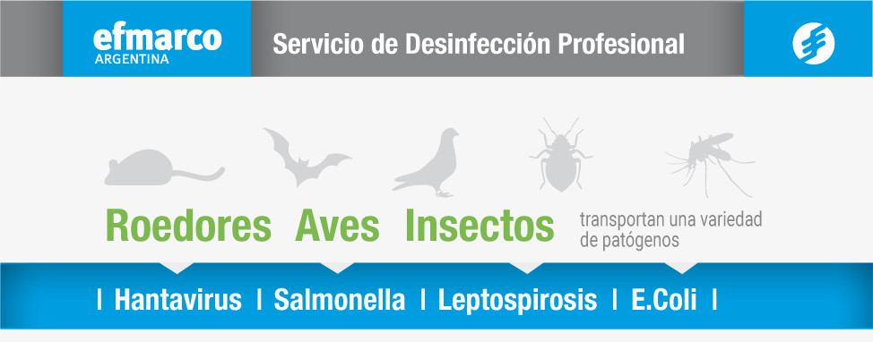
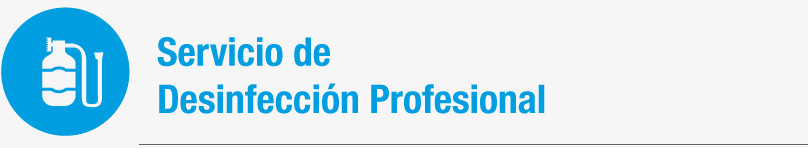

Estos agentes patógenos, se pueden propagar rápidamente en todas las instalaciones a través de, una higiene deficiente, por el contacto con la orina, las heces o el consumo de alimentos o aguas contaminadas.
Efmarco ofrece el servicio de desinfección profesional, por medio de la implementación de equipos y productos adecuados se llegan a superficies y estructuras de difícil acceso. Al utilizar un producto desinfectante se reduce rápidamente la carga de organismos causantes de enfermedades que se encuentran en la secreciones de las plagas.

Consiste en:
- Aplicación de un desinfectante en forma de micro pulverización en interiores.
- El tratamiento es seguro para los animales, no es corrosivo, no mancha y es seguro para usar en superficies metálicas plásticas, etc.-
Beneficios:
- Protege personas y mascotas contra enfermedades asociadas a plagas.-
- Acción rápida y eficaz ante organismos dañinos.
- Protección a largo plazo contra el riesgo de bacterias, virus, moho, hongos y esporas.
SERVICIOS
Manejo Integral de plagas. MIP
Control Integral de plagas. CIP
Control de Verde / Tendencias
Calidad de Agua Potable
Unidad K9
Control de Vectores
Manejo de Fauna
Control de Aves
Insectos de Madera
Plagas de Grano almacenado
Chinches de la Cama
Murciélagos
Desratización
Laboratorio de zoología